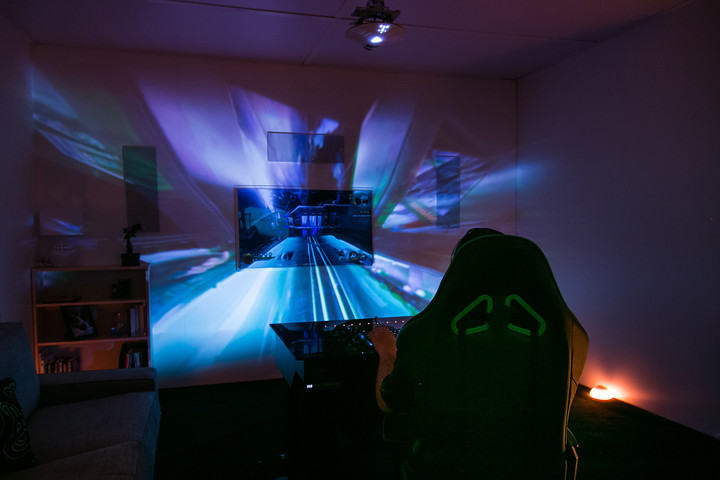
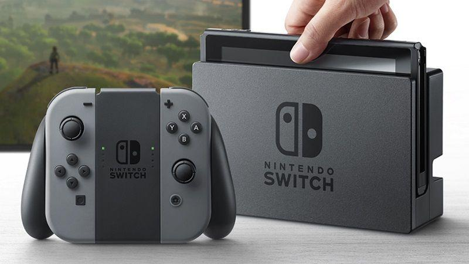

Accidentally Closing Browser Window With 23 Tabs Open Presents Rare Chance At New Life
Chelsea Greene after she closed her tabs
BROOKLYN, NY—Staring in trembling awe at her suddenly blank desktop, local woman Chelsea Greene was reportedly presented a rare chance at a new life Tuesday after accidentally closing her browser window with 23 open tabs. “Oh, my God. I’m free,” said a stunned and wide-eyed Greene, fully realizing that the abrupt disappearance of the Firefox window displaying tabs from Facebook, Reddit, CNN, OkCupid, Gmail, and 18 other websites would allow her to venture in a completely fresh direction and never look back. “Everything is going to be different from this point on. I can be anyone I want to be—I have a blank slate. Life truly begins right now.” According to sources, Greene moments later clicked “Restore Previous Session” in a brand-new browser window.
The Onion
"Accidentally Closing Browser Window With 23 Tabs Open Presents Rare Chance At New Life." The Onion - America's Finest News Source. N.p., 15 Nov. 2016. Web. 27 Jan. 2017.
RAZER PROJECT ARIANA

Project Ariana
Project Ariana is a bit more complex than a standard projector. It uses two depth-sensing cameras of Razer’s own design to scan your play area, starting with the display. It blocks out any light that would splash on your screen, then calibrates itself based on where you’ve set it up. The fisheye lens helps spread out the projection across a huge area, without sitting very far away. And you won’t mind if it has to sit out, because the stringray-shaped housing is attractive and elegant, straying from Razer’s typical matte black design process with a semi-gloss white shell.
This technique is closely related to one called “foveated rendering.” By keeping the highest quality output in the center of your eyes, while using less precise graphics around the screen, Ariana can create the illusion of a fully immersive and detailed experience. Your eyes actually see at a higher resolution at the focus than they do in the periphery, so as long as you’re watching the screen, you won’t notice any abnormalities caused by the projector or obstacles on the wall.
Aside from immersion, Ariana might also provide awareness — and not just because of an expanded field of view. Razer said its Chroma compatibility could be used to provide awareness of in-game events, most likely by flashing certain colors along the edge of your vision. This makes a lot of sense. Most first-person shooters already do something like this to indicate the direction of enemy fire.
Digital Trends
Http://www.facebook.com/CmmrBourque. "Razer's Project Ariana shocked us with impressive immersion, unmatched wow factor." Digital Trends. N.p., 06 Jan. 2017. Web. 27 Jan. 2017.
Nintendo Switch Release Date, Games News Update: 'Resident Evil 7' Joins List of Titles NOT Coming To The Console

Nintendo Switch
Weeks after Nintendo revealed all the details about their upcoming portable console, Switch, Capcom has made it clear that their latest game, "Resident Evil 7: Biohazard," is not coming to the console soon.
REUTERS/Kim Kyung-HoonNintendo Switch console as photographed during its presentation last January 13, 2017.
Game producer Masachika Kawata recently told Express Online that despite the way the Nintendo Switch appeals to him as a "very unique" device, Capcom has "no plans at the moment" to port "Resident Evil 7: Biohazard" to the portable console.
However, according to Kawata, "I'm looking forward to the possibilities of the system itself."
The statement is not surprising, considering that Capcom is one of the many game studios and developers that confirmed their support for the Nintendo Switch. So if "Resident Evil 7: Biohazard" is not coming to the Nintendo Switch soon, other Capcom games will be ported, for sure.
"Resident Evil 7: Biohazard" released on Jan. 24 for the Xbox One, PlayStation 4, and PC.
It can be recalled that earlier this month, BioWare also announced that its upcoming game "Mass Effect: Andromeda" will not be joining the Nintendo Switch party as well, at least not anytime soon.
Stevivor asked "Mass Effect: Andromeda" producer Mike Gamble whether the game would be coming to the Nintendo Switch or not. Gamble answered: "Not right now, no. We're not planning on it. If the Switch launches and everyone's just yammering for Mass Effect, who knows." But Gamble quickly added, "We never want to close doors like that."
However, "Mass Effect: Andromeda's" publisher Electronic Arts has nothing but good words for the Nintendo Switch since the beginning. So it is safe to say that people might have not yet seen the last between "Mass Effect: Andromeda" and the Nintendo Switch.
"Mass Effect: Andromeda" will be released on March 21 for gamers in the U.S. while players in Europe will have to wait for few more days as the game will not hit shelves there until March 23.
The Nintendo Switch will be available on March 3.
The Christian post
Jessica Ferrera , Christian Post Contributor. "Nintendo Switch Release Date, Games News Update: 'Resident Evil 7' Joins List of Titles NOT Coming To The Console." Christian News, The Christian Post. N.p., n.d. Web. 27 Jan. 2017.